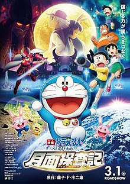

大雄的月球探測記

2019年上映的哆啦A夢電影，邀請曾得過直木賞的著名小說家．哆啦A夢迷辻村深月所創作，是哆啦A夢電影史上第一次「登月」的作品，成功塑造出大雄與琉華的友情與有趣的月球世界。她也親自執筆電影的小說化作品，劇情的深度與細節巧思贏得許多哆啦A夢迷的讚賞。另外在台灣，電影片商也從本作起變更為車庫娛樂，並在票房上有顯著的上升。
有一天，不可思議的少年琉華轉學到這裡，與大雄他們一起到了月兔王國。在那裡，大雄一行人偶然間與琉華的姐姐琉奈，以及其他擁有不可思議力量，被稱為「超能力者」的孩子們相遇了。
如果你還懷疑只有小朋友適合看哆啦A夢電影，那你是大錯特錯了。這部《電影哆啦A夢：大雄的月球探測記》不僅小朋友能夠從電影中出色但不出格的笑點中獲得樂趣，就連大人都能從《大雄的月球探測記》的種種橋段中獲得省思與啟發。這部電影的重點除了友情或親情之外，最重要的是從電影最初貫穿到最末的「想像力」。